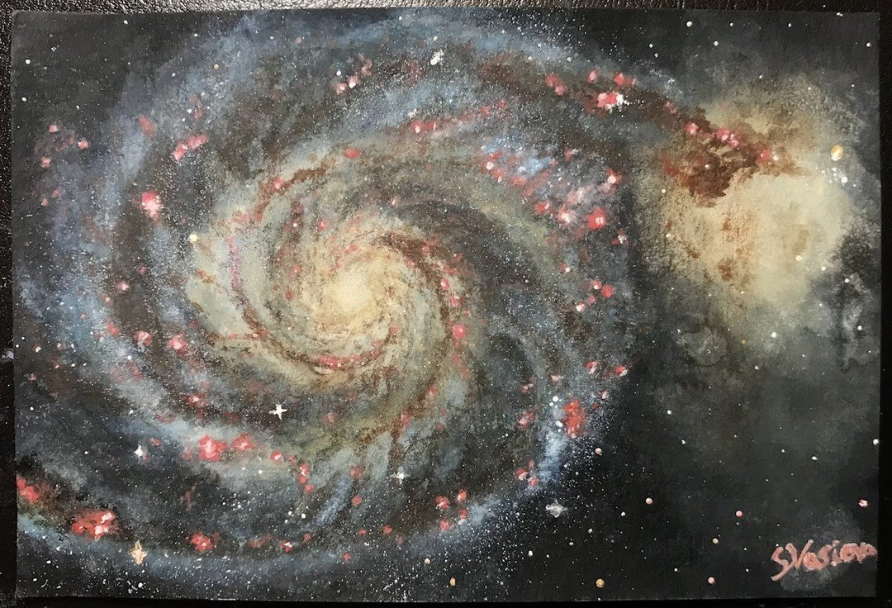

The Whirlpool Galaxy (M51)
The Whirlpool Galaxy, M51a, and dwarf galaxy M51b.
The Whirlpool Galaxy was the first galaxy to be classified as a spiral galaxy.
M51 is of great interest to astronomers who study the structure of spiral galaxies and how galaxies interact with one other.